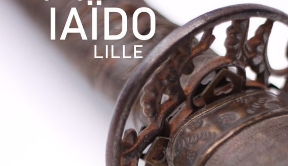

Iaido
Professeurs : Patrick VIGNEAU 6ème Dan DTR des Hauts de France assisté de
François BOURREL 6ème Dan
Lundi : de 12h00 à 13h30
Mercredi : de 18h00 à 19h00
Samedi : de 12h00 à 13h30
Le Iaï est l’étude du maniement du Katana (véritable sabre japonais). Les écoles étudiées sont le Muso Shinden Ryu Iaïdo et Iaï Jutsu. La base de la pratique est le Iaïdo de la Zen Nihon Kendo Renmei (Fédération japonaise de Kendo).
Contact : Patrick VIGNEAU ---------
Mail : ---------
Bonjour,
Pour débuter,
Des informations complémentaires sont disponibles sur le site: tarifs, horaires, calendriers, adresse, vie associative, etc.
Pour des raisons d’assurance, il n’y a pas de séances d’essais. L’inscription est obligatoire pour la pratique. Mais vous pouvez assister aux cours.
Nous vous invitons à vous inscrire sur la newsletter sur ce site afin de recevoir les différentes informations importantes envoyées durant la saison.
Bienvenue et à bientôt.
CLUB LILLOIS DE JUDO KENDO